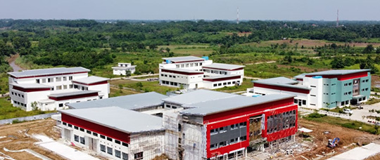
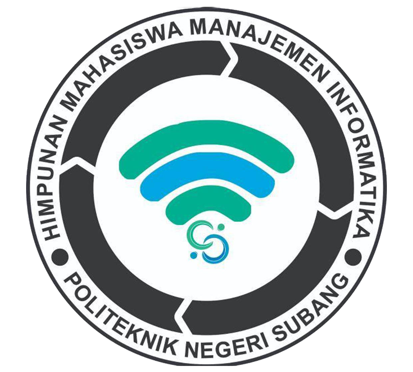

Politeknik Negeri Subang (POLSUB) merupakan perguruan tinggi negeri baru yang rencana proses pendiriannya dimulai melalui nota kesepakatan (MOU) antara Pemerintah Kabupaten Subang dengan Direktur Jenderal Pendidikan Tinggi Kemdikbud pada tahun 2011. Pada tanggal 2 April 2014 Politeknik Negeri Subang diresmikan oleh Presiden Republik Indonesia saat itu, Bapak Susilo Bambang Yudhoyono di Istana Negara. Setelah peresmian tersebut, diangkat Direktur pertama POLSUB melalui Surat Keputusan Menteri Pendidikan dan Kebudayaan no. 112/MPK.A4/KP/2014, tertanggal 24 April 2014.
Politeknik Negeri Subang adalah perguruan tinggi pertama yang berada di Kabupaten Subang
Jurusan di Politeknik Negeri Subang| Prodi | Mahasiswa Aktif |
|---|---|
| D3 SI | 181 |
| D4 TRPL | 149 |
| D3 Agroindustri | 191 |
| D3 Pemeliharaan Mesin | 132 |
Ayo isi Formulir Penerimaan Mahasiswa Baru!